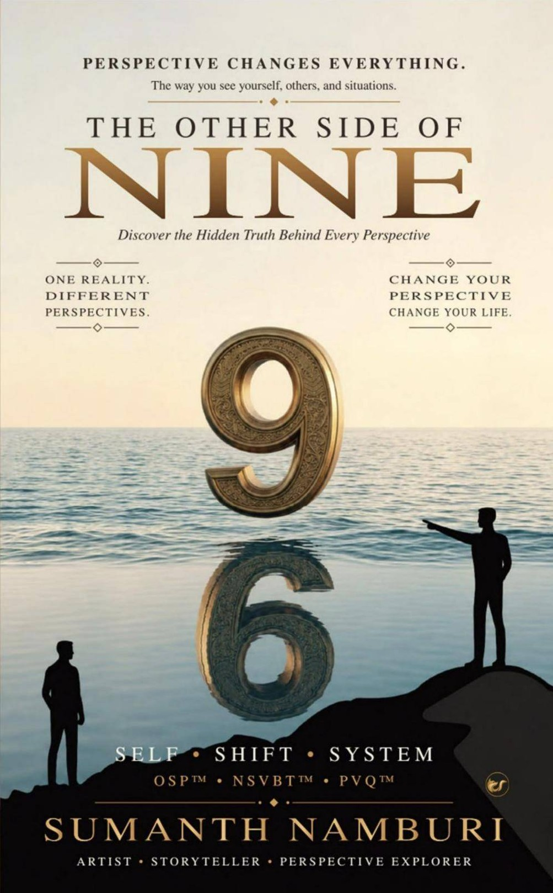
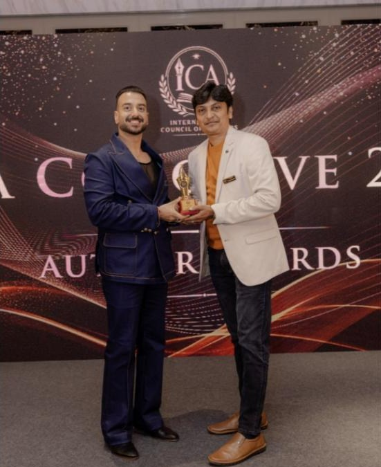

Sumanth Namburi · Author
Every story has another side.
An entrepreneur, educationist and artist from Hindupur, Andhra Pradesh. His first book asks the question most of us forget to ask before we decide: what have I not yet seen?

One numeral, two readings
One numeral · two readings
Two people look at the same mark on the ground.
Neither of them is wrong. Each is standing somewhere.
N. S. Sumanth NamburiArtist · Storyteller · Perspective Explorer
From Hindupur, with a question about how we see.
Portrait to comeNo verified, licensed photograph of Sumanth was available. One will be placed here once he supplies it.
Sumanth Namburi was born and raised in Hindupur, Andhra Pradesh. He holds an MBA, and has spent his working life between business and education.
As Director of NSV EDUSPACE, his work centres on practical learning, skill development and value-based growth — helping students and professionals find careers that suit them. He is also an entrepreneur. Press coverage of his book describes him as a jewellery entrepreneur.†
Community service has run alongside both. He has served Rotary International in several leadership roles, including, according to press coverage, as Assistant Governor of Rotary District 3160†.
He is a practising artist, too: pencil sketching, Tanjore painting, craftwork and digital art. And he has spent years with the question of human potential — through the Bhagavad Gita, modern psychology, and programmes such as Inner Engineering, Ayyappa Deeksha and the Art of Living.
The Other Side Of Nine grew out of all of this at once: years of watching people in business, at home and in community work, and wondering why the same situation could look so different to two people standing in it.
“My journey began with observing people and questioning why we see the same situation differently.”
A path, briefly
The facts behind the book, in the order they happened.
- Hindupur, Andhra PradeshHomeBorn and raised.
- Master of Business AdministrationEducationMBA.
- NSV EDUSPACEDirectorEducation, skill development and leadership.
- Rotary InternationalCommunity serviceLeadership roles over many years. Former Assistant Governor, District 3160; Best Assistant Governor recognition for Andhra clubs.†
- International Council of AuthorsAmbassador & Founding Member†Contributor to an ICA anthology.
- The Other Side Of NineSeptember 2026Debut book, published by Clever Fox Publishing.
- ICA Conclave 2026, GoaOctober 2026†Book launch; Author Award and featured-author recognition.
Beyond the page
What shapes the way he looks.
Education
Practical learning and value-based growth, through his work at NSV EDUSPACE.
Art
Pencil sketching, Tanjore painting, craftwork and digital art.
Reflection
The Bhagavad Gita and modern psychology, read side by side.
Practice
Inner Engineering, Ayyappa Deeksha and the Art of Living programmes.
The book
The Other Side Of Nine
Discover the Hidden Truth Behind Every Perspective
Most of what we believe about a situation is one side of it. This book is about finding the rest — in a disagreement, a decision, a failure, a person we think we have understood.
Sumanth Namburi works through it with stories, practical insight and reflections from the Bhagavad Gita. He introduces a small set of ideas of his own: the Other Side Principle, a way of finding value inside difficult experiences, and a measure of how well we see beyond the obvious.
It is not a book about positive thinking. It does not ask you to give up what you believe — only to widen it, by changing one question. Not “Am I right?” but “What have I not yet seen?”
Written for students, parents, educators, entrepreneurs, professionals and leaders — anyone who has to decide, and live with other people’s decisions.
- Author
- Sumanth Namburi
- Publisher
- Clever Fox Publishing
- Published
- September 2026
- Length
- 354 pages
- ISBN-13
- 978-93-7500-866-8
- ISBN-10
- 9375008665
- Formats
- Paperback · Kindle eBook
Prices and availability are set by each store.
Philosophy
“Look again before you conclude.”
The approach at the heart of the book: SELF • SHIFT • SYSTEM†
Self
Notice your own lens first — the beliefs, memories and assumptions you bring into a moment before anything has been said.
Shift
Step deliberately toward another viewpoint, and stay there long enough to see what it sees.
System
Turn that understanding into how you act — at home, at work and in the community — so it lasts longer than a good intention.
Named in the book
- OSPTM
- The Other Side Principle
Seek what you have not yet seen. Before judging a situation or a person, look for the side of it that is hidden from where you stand.
- NSVBTTM
- The New System of Value-Based Thinking Through Perspective
A way of uncovering the value inside an experience — including the ones that disappoint us.
- PQTM / PVQTM†
- Perspective Quotient
The ability to make wiser decisions by seeing beyond the obvious. The book’s listing calls it PQ™; the printed cover reads PVQ™. The author will confirm the official term.

Recognition
Launched in Goa, October 2026.
The Other Side Of Nine was launched at ICA Conclave 2026, organised by the International Council of Authors, where Sumanth received the Author Award and featured-author recognition for the book.†
“This recognition gives me confidence that the experiences I have lived and the lessons I have gathered can connect with others,” he said at the time.
Insights
Notes on perspective, from Sumanth.
Essays and short reflections will be published here. Nothing has been posted yet — this space is waiting for his first piece.
Contact
Talks, interviews and book events.
To invite Sumanth to speak, or to arrange an interview or a reading, contact details will be listed here shortly.